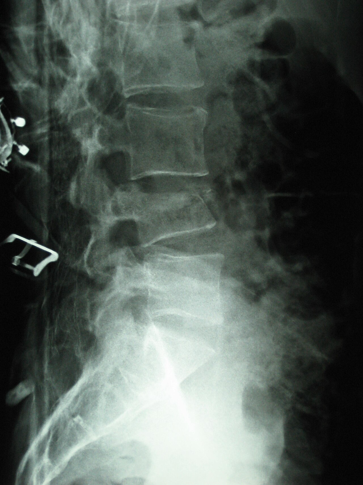

Ficha del catálogo
Fractura vertebral osteoporótica
- Sistema
- Óseo
- Modalidad
- RX
- Región
- Columna dorsolumbar
- Dificultad
- Intermedio
El colapso vertebral por fragilidad es la fractura osteoporótica más frecuente y muchas veces pasa inadvertida porque cursa sin traumatismo claro. Se concentra en la transición dorsolumbar y produce pérdida de altura corporal y cifosis progresiva. Identificarla tiene valor porque predice nuevas fracturas y obliga a tratar la osteoporosis.
Técnica
Radiografía lateral de columna dorsal y lumbar en bipedestación, con especial atención a la morfología de cada cuerpo vertebral.
Qué observar
- Pérdida de altura del cuerpo vertebral en su porción anterior, media o total
- Deformidad en cuña con acuñamiento anterior y muro posterior conservado
- Aumento de la densidad en banda por impactación trabecular reciente
- Rarefacción trabecular difusa con corticales adelgazadas y realce del contorno
- Ausencia de masa de partes blandas o de destrucción del pedículo
- Cifosis dorsal aumentada y disminución global de la talla
Hallazgos
Uno o varios cuerpos vertebrales con pérdida de altura y deformidad en cuña sobre un esqueleto axial osteopénico, sin lesión destructiva focal.
Perlas
La clave para separar el colapso benigno del maligno es el pedículo y el muro posterior. La destrucción del pedículo, la masa paravertebral y la afectación del muro posterior orientan a metástasis (ante la duda, la resonancia lo resuelve).
Diagnóstico diferencial
- Colapso metastásico
- Destrucción del pedículo, masa epidural y sustitución completa de la médula ósea.
- Espondilodiscitis
- Afecta al disco y a dos platillos contiguos con absceso paravertebral.
- Vértebra de Schmorl y cambios degenerativos
- Hernias intraesponjosas sin pérdida global de altura.
Simuladores
- Vértebra en cuña congénita
- Enfermedad de Scheuermann
- Proyección oblicua que simula acuñamiento
Por modalidad
- RX
- Detección y seguimiento morfométrico
- TC
- Define el muro posterior y los fragmentos retropulsados
- RM
- Distingue fractura reciente de antigua por el edema y descarta malignidad
Protocolo
Radiografía lateral dorsal y lumbar. Resonancia con secuencias T1 y con supresión grasa cuando se necesita datar la fractura o descartar tumor.
Clasificación
Las deformidades se describen como en cuña, bicóncava o por aplastamiento completo, y se gradúan según el porcentaje de altura perdida.
Errores frecuentes
- Asumir origen osteoporótico sin valorar pedículos y partes blandas
- No datar la fractura y tratar como aguda un colapso antiguo
- Pasar por alto fracturas múltiples al describir solo la más evidente

osteoporosis fractura vertebral acuñamiento cifosis fragilidad colapso columna